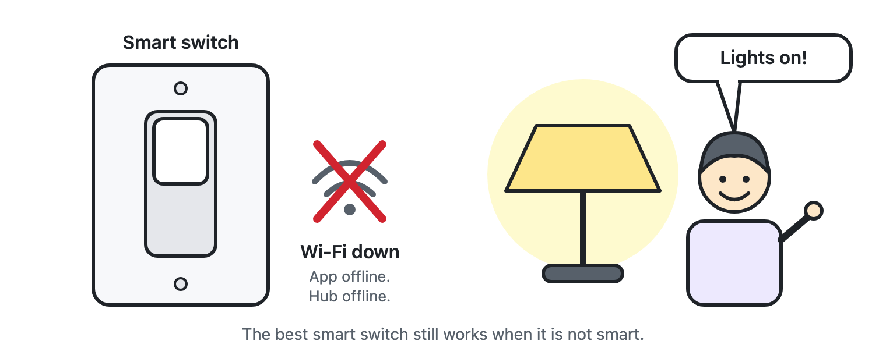
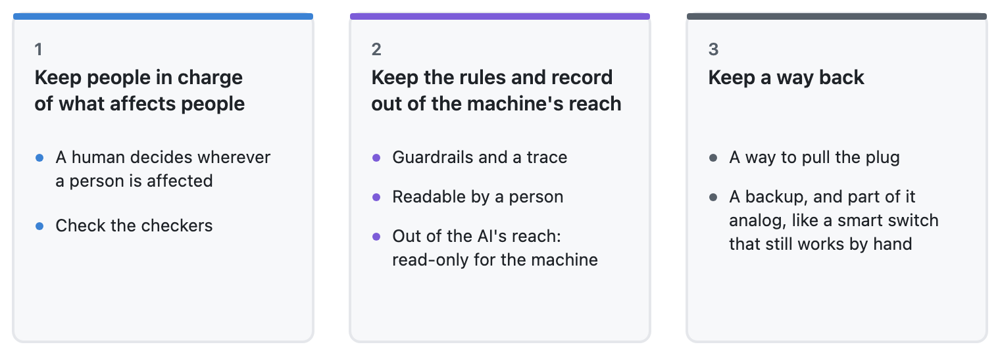

Think about a smart light switch in your house.
When the Wi-Fi is humming and the cloud app works, it feels like magic. Lights dim on a schedule, voice commands work across the room, and you never think about the wiring in the wall.
Nobody cares about the physical, mechanical toggle on that switch—until the evening the internet goes down, the hub freezes, and you are standing in a dark kitchen. Suddenly, that boring manual toggle is the only thing that matters.

As we wrap up this seven-part series on building and working with AI, the smart wall switch is my favorite test for any automated business system: does your workflow still work when the "smart" part fails?
Always keep a way back
Over the past six weeks, we've looked at how AI has become the new user of our software, how "all checks passed" can hide silent failures, and why we have to lock the rulebook where the machine can't edit it.
Even when you do all of that right, there is one final guardrail every team needs: a manual override.
A true manual override has two parts:
- A way to pull the plug. An off switch, a way to revoke an access key, a way to roll back yesterday's automated changes in one click. If the only way to stop an automated system is to politely ask the AI to stop, you don't control it.
- An independent, manual backup. Keep independent copies of your critical records and a simple, non-automated way to do your most important job when the technology is down. Remember: a backup that depends on the same AI system it is backing up is not a backup.
If I had to put this entire series into one sentence, it would be this: let the machines run the routine, lock the rulebook and the diary where they can't rewrite them, and never install a smart switch without a manual toggle.

Why I'm still optimistic
None of the warnings in this series make me gloomy. In fact, I am having more fun building things today than I have in years.
The AI is the customer of the code. It may even be the manager that placed the order. A human being is the customer of the outcome, and the name on the bill.
Think about who sits at the other end of all our software: a real person waiting for a reply, a refund, a delivery, or a medical result. They don't care whether a human or an AI processed the paperwork. They care that it works properly, that the answer is right, and that if something goes sideways, a person can open the diary, see what happened, and fix it.
Who writes and operates the software will keep changing, and increasingly it will be machines working with machines. The person who needs the final outcome to be right won't change. Whether we keep that person in the picture is entirely up to us.
What is one "manual toggle" your business refuses to give up, no matter how much you automate? I'd love to hear about it—find me on LinkedIn.
Cheers,
Markus
No bug 🐛 too small, no syntax too weird 🔍 🧐 🔨 🦾